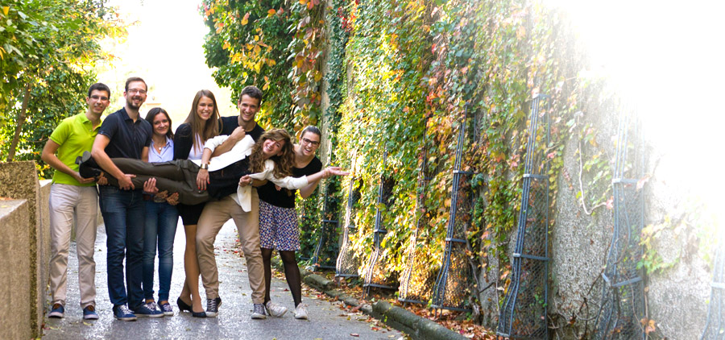

1. Odabir teme
Kada birate temu koju želite obraditi, vodite računa da je ona aktualna, zanimljiva i da ulazi u gradivo koje ste do tada odslušali. Ima više razloga za to. Prvi je što je dosta teško obrađivati temu o kojoj malo znate. Naravno, moguće se pripremiti, naučiti to usko područje iz udžbenika više godine ili s interneta, ali u tim uvjetima nemate dovoljno široko znanje područja da možete doista razumjeti o čemu pišete. Drugi razlog je što su teme koje vam na nižim godinama zvuče nevjerojatno zanimljivo, redovito gradivo viših godina i detaljno su obrađene u udžbenicima s kojima ćete se susresti.
2. Pronalazak informacija
U slučaju da pišete o činjenicama i istraživanjima, nužno je navesti izvore iz kojih ste preuzeli informacije. Također, poželjno je da učite pravilno pisati reference (popis literature). Upute za to možete naći u udžbeniku Uvoda u znanstveni rad ili malo niže u pdf-formatu. Pronalazak informacija najteži je dio faze pripreme za pisanje članka. Pri tome, važno je biti kritičan prema informacijama koje koristite. Neke su napisane za široku publiku pa su pojednostavljene i postoji rizik da ćete napisati nešto što nije točno. Neke su iznimno stručne (to se uglavnom odnosi na znanstvene članke) i možda ih ne uspijete ispravno protumačiti što ponovno nosi rizik od netočnosti. Najbolje moguće rješenje problema: zatražite pomoć nekoga od nastavnika. Oni vas mogu uputiti na literaturu i objasniti ono što vam nije jasno, ali puno bitnije – oni će pročitati što ste napisali i posavjetovati vas oko prepravka.
3. Profil publike
Priznajte sami sebi biste li pročitali tri strane članka o Ebstein-Barrovom virusu koji detaljno i precizno opisuje građu virusa, proteine koji sudjeluju u njegovoj replikaciji, incidenciju zaraženosti, češće i rjeđe simptome, te načine liječenja nekompliciranih i kompliciranih slučajeva. Kad počinjete pisati članak najbitnije je da se sjetite kome je on namijenjen: studentima od 1. do 6. godine koji to čitaju u Radiću, u tramvaju, u busu ili vlaku dok idu doma, na kauču nakon ručka itd. Gdje leži problem?
Članci nisu sami sebi svrha. Oni postoje da bi bili pročitani.
Balansirate između dvije provalije: ako previše pojednostavite, dobit ćete članak koji je površan, u kojem vam mogu pobjeći značajne netočnosti i koji je u krajnjoj liniji nezanimljiv jer nije dovoljno informativan. Ukoliko članak napišete prestručno, riskirate da bude dosadan i da ga stoga nitko ne pročita, ali i da se pokoji hrabri čitatelj, ako ga bude, pogubi u moru informacija i time ne shvati bit vaše teme ili ne prepozna što je tu zapravo važno. Ta situacija nije značajno bolja od one u kojoj se članak ni ne pročita jer niste postigli glavni cilj komuniciranja – prenijeti poruku. Kako odrediti koliko detaljan biti? Teško. Ne postoje točne upute niti instant formula. U početku vam može pomoći to što ste prostorno ograničeni. Trebali biste se koncentrirati na samu temu – što je njezina centralna točka, tj. što je za nju najvažnije. To treba biti os koja se provlači kroz cijeli članak i s obzirom na koju slažete sve druge informacije. Pojednostavljeno: prva razina informacija će definirati vašu temu (npr. neuron je živčana stanica zadužena za prijenos impulsa); druga razina informacija će temu opisati - s obzirom na temu i vašu procjenu publike opis može bit više ili manje detaljan (npr. neuroni imaju izdanke koji primaju impuls – dendrite, tijelo stanice koje je zaduženo za metabolizam, čuvanje genetske informacije i sl. te izdanak koji prenosi i otpušta impuls – akson, itd.), treća razina informacija je više ili manje usko povezana s temom (npr. osim neurona u CNS-u postoje i astrociti ili npr. koji tip neurona gradi koji sloj moždane kore). Razmišljanje o informacijama na takav hijerarhijski način olakšava odabir onih koje se mogu odbaciti. Pri tome je dobro pronaći neke informacije koje možda nisu bitne, ali su duhovite, iznenađujuće, zanimljive ili na neki drugi način privlače pažnju. Sažeto, sam trud da razmišljate o publici dok pišete članak vjerojatno će vas dovesti do toga da vam članci ne padnu u zamku nečitanosti/nečitljivosti.
4. Struktura i oblikovanje članka
Članci u Medicinaru se mogu opisati kao kraći eseji što znači da njihova struktura nije strogo određena. Bolje ih je pisati u više manjih odlomaka nego u obliku jednog komada teksta. Na taj način se čitatelju olakšava praćenje manjih cjelina misli u tekstu. Naslovi odlomaka bi trebali biti kratki da privuku pažnju i na neki način sažmu sadržaj odlomka. Idealni odlomak pokriva četvrtinu ili trećinu stranice u fontu Times New Roman 12, a cjelokupni tekst ne bi smio biti duži od 3 stranice u istom fontu.
5. Ilustracije
Prigodno je kad autor sam pronađe ilustracije za svoj članak. Na taj način može utjecati na to kako najbolje vizualno predstaviti temu. Pri tome je važno da ilustracije nisu zaštićene autorskim pravima – ukoliko niste sigurni, najbolje je ne uzimati ih. Ilustracije na Wikipediji najčešće su open access, ali i dalje je najbolja opcija naći nekoga tko će vam fotografirati ili nacrtati što želite. Informacije tko su osobe koje to rade saznat ćete od svog urednika rubrike. Za kraj, najvažnije -- dajte roditeljima, braći ili nekome od prijatelja da pročita vaše djelo i iskreno vam kaže što o njemu misli. Obično je to to najkorisniji savjet po završetku pisanja.